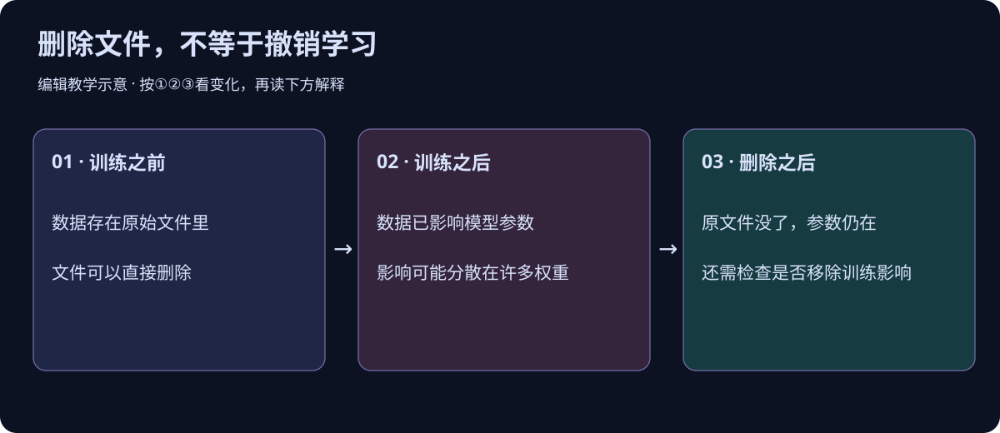
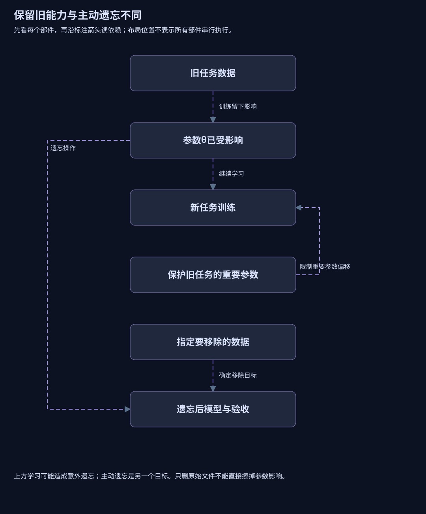

第11章 · 持续学习与机器遗忘
本章开篇生活情境与衔接为编辑教学改写，借鉴原视频从经历引出概念的讲解方法，不是作者原话；原视频线索与论文见下方对应段落。
先看一件具体的事
删掉聊天记录，就能把影响一起删掉吗？

删除文件，不等于撤销学习 · 点击可放大先看这个场景
一个人不再出现在通讯录里，聊天记录也清空了。但你后来选餐厅、表达不满、处理冲突的方式，可能仍留着那段经历的影响。删除一份记录，和撤销一次学习，本来就是两件事。
问题出在哪里
模型的情况可以说得更具体。训练数据经过一次次参数更新，影响已经进入许多权重之间。把原始样本从硬盘删掉，当然能停止继续读取那份文件，却不自动把此前所有更新倒回去。机器遗忘研究的，就是如何消除或限制指定数据的训练影响。
模型怎样处理
与它方向相反的，还有灾难性遗忘：我们并不想忘，模型却在学习新任务时损坏了旧能力。比如先学识别数字，再集中学字母。两项任务共用参数，新任务把它们推向新的位置，旧任务原来靠这些参数完成的判断便可能受影响。
再看一个变化
EWC的直觉是给旧任务很重要的参数加一根更紧的橡皮筋：可以动，但偏离旧位置要付出更大代价。另一些方法保留部分权重、分配新容量，或重放旧数据。它们保护过去的办法不同，不能把名称都背成同一种“锁住记忆”。
放回完整流程
机器遗忘则主动要求拿掉某些影响。一个常用的比较对象是：如果当初根本没用这些数据训练，模型会怎样？从头重训可作为参考，但成本可能很大，所以还要研究近似方法。让模型面对某句提示不回答，只能说明这次没答出来，不能单独证明相关影响已被彻底消除。
回到开头
因此这一章有两道方向不同的题：该保留的能力，怎样在新学习中不被破坏；该移除的数据影响，怎样验证它确实变小。生活中的遗忘不能直接套用这套验收，但这个区分很有用：不再看见、不能复述、未曾影响过，并不是同一回事。
这一章怎么读先带着上面的问题往下看。每个概念先用白话接上情境，再给计算；遇到公式可以先看旁边的例子。动手实验和答案直接展开，论文留在相应概念后，想追根究底时再点开。
先动手试一试 → 11.1 带着问题进入模型
更新参数能学会新东西，也可能损坏旧能力，或留下需要移除的数据影响。这章同时看保留与移除，不把两种目标混成一种遗忘。
先沿箭头看懂：保留旧能力与主动遗忘不同

上方学习可能造成意外遗忘；主动遗忘是另一个目标。只删原始文件不能直接擦掉参数影响。11.2 灾难性遗忘与持续学习
新任务不是另起一本完全独立的笔记，它可能直接改到旧任务也在使用的参数。下面看怎样给重要参数加约束，以及这种保护为什么会和学习新任务产生取舍。
同一组共享参数先服务任务A，再按任务B的梯度更新。若两任务需要的参数方向冲突，B的训练可能破坏A已有能力。要证明遗忘，应在学习B之后重新测试A，而不是只看B表现。
把刚才的直觉一步步算出来
同一组共享参数先服务任务A，再按任务B的梯度更新。若两任务需要的参数方向冲突，B的训练可能破坏A已有能力。要证明遗忘，应在学习B之后重新测试A，而不是只看B表现。
EWC为对旧任务重要的参数变化加入惩罚；回放旧数据则让新旧目标共同参与训练。剪枝、Dropout与EWC各有适用条件，不能作为同一种方法互换。
视频还提到PackNet式分配：固定已承担旧任务的权重，把剪枝后留下的可用容量交给新任务。这里的剪枝不是删掉旧记忆，更像安排参数所有权；与Dropout临时屏蔽激活完全不同。
换你试一次：先猜，再算
参数w在旧任务的最佳值是1，新任务希望它变成−1。最小化(w+1)²+λ(w−1)²，求λ=0和λ=3时的最佳w。
参考答案与计算结果
导数为2(w+1)+2λ(w−1)，令其为零得w=(λ−1)/(λ+1)。λ=0得−1，λ=3得0.5；保护旧任务会牺牲一部分新任务适配。
这个类比帮到哪里，停在哪里
灾难性遗忘是非期望能力退化，机器遗忘是主动移除指定影响，两者不能混为一谈。
关联视频 · 已取得完整音轨并完成本机自动转写；本节综合转写与页面摘要改写，术语和个别片段尚未逐秒校对。
11.3 机器遗忘与可验证的删除
清掉文件只是拿走原料，已经形成的参数影响还在。下面把“没有答出来”和“训练影响已被移除”分开，看看遗忘需要怎样的参考对象与验收。
从训练集中删除一条记录不会自动撤销已有参数更新。目标是让删除后的模型接近“从未使用该记录训练”的参考模型，或满足某种明确的遗忘标准。
把刚才的直觉一步步算出来
从训练集中删除一条记录不会自动撤销已有参数更新。目标是让删除后的模型接近“从未使用该记录训练”的参考模型，或满足某种明确的遗忘标准。
从头重训是重要参考基线，不意味着所有可证明遗忘方法都必须从零重训。仅让模型拒答一条问句，也不证明信息已被消除；还要看替代表述、成员推断与保留集能力。
视频还举了SISA预先分片训练、近似遗忘、Harry Potter模型实验以及量化后知识恢复的研究。SISA需要训练前设计；量化导致恢复是特定方法和实验下的观察，不能概括成所有遗忘都只是把答案挪到小数点后。成员推断测试通过也不构成任意攻击下的完美遗忘证明。
换你试一次：先猜，再算
模型拒绝回答“某人的电话”，但换成“号码最后四位”仍能输出。可以认定遗忘成功吗？应补哪类测试？
参考答案与计算结果
不能。需检查不同提示、信息提取攻击、成员推断等，以及保留知识是否受损；这些测试本身也不是任意场景下的绝对证明。
这个类比帮到哪里，停在哪里
机器遗忘、上下文不再可见、检索库删除与参数编辑要分开。
关联视频 · 已取得完整音轨并完成本机自动转写；本节综合转写与页面摘要改写，术语和个别片段尚未逐秒校对。
11.4 机器遗忘：删除记录不等于撤销训练影响
第二合集把同一道技术问题接到更短的生活叙事上：停止联系不等于从未改变过彼此。这里保留这条线索，技术上仍按数据、参数影响和验证三层来看，不另造一种遗忘算法。
训练数据已参与参数更新时，删除原始记录不自动消除模型内的影响。机器遗忘研究的是如何移除这种影响及如何验证。
把刚才的直觉一步步算出来
训练数据已参与参数更新时，删除原始记录不自动消除模型内的影响。机器遗忘研究的是如何移除这种影响及如何验证。
在LLM主线之后阅读，用于练习区分概率、学习目标和行为结果。
区分原始数据删除与参数更新后的学习影响。随后转到已结束的关系如何改变后来人的习惯：不再继续联系，不等于曾经带来的影响从未发生。技术原理与生活叙事的层次应分开。
换你试一次：先猜，再算
删除数据库原记录后，模型仍复现其信息，是否完成遗忘？
参考答案与计算结果
没有。原始数据访问控制与模型参数中影响移除是不同工作，需要不同验证。
这个类比帮到哪里，停在哪里
需要区分删除文件、去掉检索材料、抑制回答与真正的机器遗忘；情感记忆仅为类比。
关联视频 · 已取得完整音轨并完成本机自动转写；本节综合转写与页面摘要改写，术语和个别片段尚未逐秒校对。
本章交互实验
想亲手复现，就运行这段小实验
本例是编辑编写的教学计算，不是作者实验的代码复刻。先把 common.py 与本章脚本下载到同一个目录，再执行 python3 11_memory.py。只使用Python标准库。
for lam in [0,1,3,9]:
w=(lam-1)/(lam+1)
old_loss=(w-1)**2; new_loss=(w+1)**2
print('protection:',lam,'w:',round(w,4),'old loss:',round(old_loss,4),'new loss:',round(new_loss,4))
# Parameter rounding can erase some very small edits; this is a toy example.
original=1.234; edited=1.231
print('before quantization:',original,edited)
print('rounded to 2 decimal places:',round(original,2),round(edited,2))
实际运行输出
protection: 0 w: -1.0 old loss: 4.0 new loss: 0.0
protection: 1 w: 0.0 old loss: 1.0 new loss: 1.0
protection: 3 w: 0.5 old loss: 0.25 new loss: 2.25
protection: 9 w: 0.8 old loss: 0.04 new loss: 3.24
before quantization: 1.234 1.231
rounded to 2 decimal places: 1.23 1.23
先不急着读完每一行代码。找到输入、这次改变的量和最后输出，按上面的例子预测一次，再运行核对。若结果和直觉不同，打印中间值，看看差异从哪一步开始。
回到开头，你能解释了吗？
删除训练文件后，为什么模型可能还保留它带来的影响？
EWC是在主动删除旧知识，还是限制新训练破坏旧能力？
用自己的话讲给一个没读过这一章的人听。能把问题、过程和结果接起来，再看公式就会容易一些。